Show the code
# hide this code chunk
#| echo: false
#| message: false
# defines the se function
se <- function(x) {
sd(x, na.rm = TRUE) / sqrt(length(x))
}
#load these packages, nearly always needed
library(tidyverse)# hide this code chunk
#| echo: false
#| message: false
# defines the se function
se <- function(x) {
sd(x, na.rm = TRUE) / sqrt(length(x))
}
#load these packages, nearly always needed
library(tidyverse)The purpose of this experiment is to quantify the differences of physiological, metabolic, and psychological responses in lean and obese mice, under stressed and unstressed conditions.
[Link to the protocol used (permalink preferred) for the experiment and include any notes relevant to your analysis. This might include specifics not in the general protocol such as cell lines, treatment doses etc.]
High-fat diet (D12492) formula: https://researchdiets.com/formulas/d12492
[Describe your raw data files, including what the columns mean (and what units they are in).]
library(readxl) #loads the readr package
filename <- "raw data/Data Collection Sheet.xlsx" #input file(s)
#this loads whatever the file is into a dataframe called exp.data if it exists
property <- read_excel(filename, sheet = "Property") |>
mutate(Diet = factor(Diet, levels = c("NCD", "HFD")), #relevel diet so NCD is the reference
Stress = factor(Stress, levels = c("CON", "CUS"))) #relevel stress so CON is the reference
weight <- read_excel(filename, sheet = "Weight") |>
left_join(property) |>
mutate(Date = ymd(Date),
`Start Date`=ymd(`Start Date`)) |> #converted date
mutate(`Weighted Date` = Date - `Start Date`)
food <- read_excel(filename, sheet = "Food") |>
left_join(property) |>
mutate(Date = ymd(Date),
`Start Date`=ymd(`Start Date`)) |> #converted dates
mutate(`Weighted Date` = Date - `Start Date`) |>
mutate(`Left (g)` = as.numeric(`Left (g)`))
NMR <- read_excel(filename, sheet = "NMR") |>
left_join(property) |>
mutate(Date = ymd(Date),
`Start Date`=ymd(`Start Date`)) |> #converted dates
mutate(`Weighted Date` = as.numeric(Date - `Start Date`))
#load packages
library(lme4)
library(lmerTest)
library(knitr)
library(broom)
library(broom.mixed)
library(performance)
library(see)
library(ggpattern)
library(mediation)
library(influence.ME)
library(emmeans)
library(pbkrtest)
library(DHARMa)
library(drc)
library(fitdistrplus)
library(AER)
library(car)These data can be found in /Users/macbook/Documents/GitHub/CushingAcromegalyStudy/scripts/scripts-corticosterone in a file named no file found. This input file was most recently updated on unknown. This script was most recently updated on Sat Jun 13 23:45:59 2026.
[Describe the analysis as you intersperse code chunks]
weight |>
group_by(Stress, Diet, `Weighted Date`) |>
summarize(Average = mean(`Weight (g)`),
SE = se(`Weight (g)`)) |>
ggplot(
aes(x = `Weighted Date`,
y = `Average`,
ymin = Average - SE,
ymax = Average + SE,
lty = Stress,
color = Diet)) +
geom_line() +
geom_errorbar(width = 2.3) +
labs(y = "Weight (g)",
x = "Time (day)") +
scale_color_manual(values = c("grey", "black")) +
theme_classic(base_size = 16)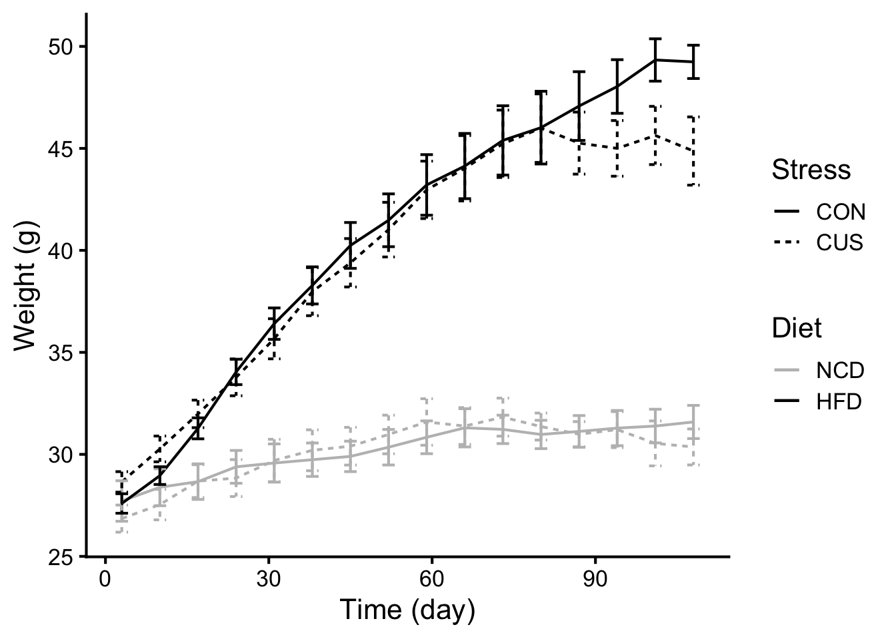
stress.start <- 12*7
weight.stress <- filter(weight, `Weighted Date` >= stress.start) |> #filter for only data since stress start
arrange(Date) |> #sort by date
group_by(Code) |> #group by the code
mutate(Date.Stress = as.numeric(ymd(Date)-first(ymd(Date)))) |> #set date to be after stress start
mutate(Weight.Stress = `Weight (g)`-first(`Weight (g)`)) #set weight to be after stress start
weight.stress |>
group_by(Stress, Diet, `Weighted Date`) |>
summarize(Average = mean(Weight.Stress),
SE = se(Weight.Stress)) |>
ggplot(
aes(x = `Weighted Date`,
y = `Average`,
ymin = Average - SE,
ymax = Average + SE,
lty = Stress,
color = Diet)) +
geom_line() +
geom_errorbar(width = 0.5) +
labs(y = "Weight (g)",
x = "Time (day)") +
scale_color_manual(values = c("grey", "black")) +
theme_classic(base_size = 16)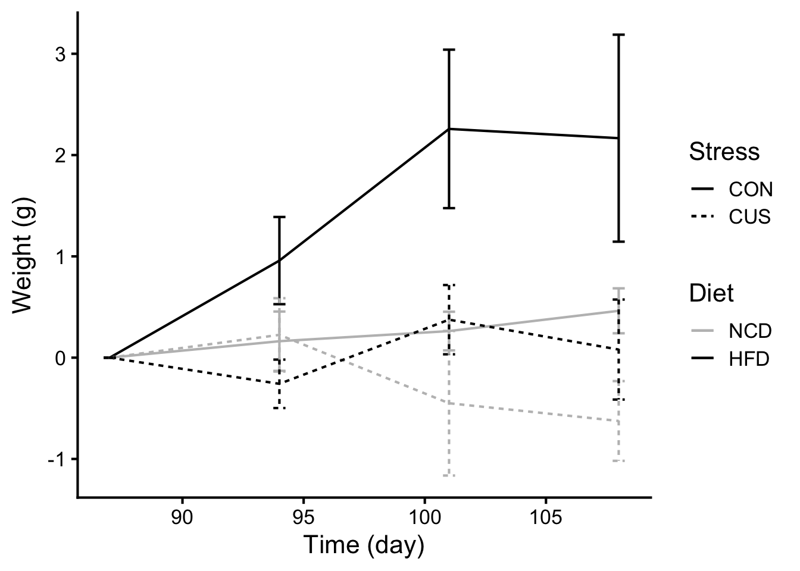
weight.post.stress <- filter(weight, `Weighted Date` >= 12*7) |> #filter for only data after stress
mutate(Diet = relevel(as.factor(Diet), ref = "NCD")) #re-level diet so NCD is the reference
weight.post.stress.mlm <- lmer(`Weight (g)` ~ `Weighted Date` + Diet + Stress + (1 + `Weighted Date`||Code), data = weight.post.stress)
weight.post.stress.mlm |>
tidy(effects = 'fixed') |>
kable(caption = 'Diet, Stress, Time effect on Weights after stress')| effect | term | estimate | std.error | statistic | df | p.value |
|---|---|---|---|---|---|---|
| fixed | (Intercept) | 28.7217966 | 1.6286643 | 17.635185 | 115.17677 | 0.0000000 |
| fixed | Weighted Date |
0.0347094 | 0.0119299 | 2.909457 | 117.06870 | 0.0043341 |
| fixed | DietHFD | 15.8088069 | 1.2416241 | 12.732362 | 37.00789 | 0.0000000 |
| fixed | StressCUS | -2.0900567 | 1.2166173 | -1.717925 | 37.01744 | 0.0941660 |
#HFD only
weight.post.stress.mlm.hfd <- lmer(`Weight (g)` ~ `Weighted Date` + Stress + Stress:`Weighted Date` + (1 + `Weighted Date`||Code), data = weight.post.stress |>
filter(Diet == 'HFD'))
weight.post.stress.mlm.hfd |>
tidy(effects = 'fixed') |>
kable(caption = 'Stress, Time, Stress:Time effect on HFD Weights after stress')| effect | term | estimate | std.error | statistic | df | p.value |
|---|---|---|---|---|---|---|
| fixed | (Intercept) | 37.5565476 | 2.6010585 | 14.438948 | 89.94617 | 0.0000000 |
| fixed | Weighted Date |
0.1114286 | 0.0230290 | 4.838622 | 68.01651 | 0.0000078 |
| fixed | StressCUS | 6.5672109 | 3.7447684 | 1.753703 | 89.99847 | 0.0828859 |
| fixed | Weighted Date:StressCUS |
-0.0993090 | 0.0334553 | -2.968412 | 68.05767 | 0.0041296 |
#NCD only
weight.post.stress.mlm.ncd <- lmer(`Weight (g)` ~ `Weighted Date` + Stress + Stress:`Weighted Date` + (1 + `Weighted Date`||Code), data = weight.post.stress |>
filter(Diet == 'NCD'))
weight.post.stress.mlm.ncd |>
tidy(effects = 'fixed') |>
kable(caption = 'Stress, Time, Stress:Time effect on NCD Weights after stress')| effect | term | estimate | std.error | statistic | df | p.value |
|---|---|---|---|---|---|---|
| fixed | (Intercept) | 29.2750000 | 1.5068584 | 19.427837 | 45.99931 | 0.0000000 |
| fixed | Weighted Date |
0.0212500 | 0.0175333 | 1.211980 | 59.99813 | 0.2302715 |
| fixed | StressCUS | 5.0517857 | 2.1310196 | 2.370596 | 45.99932 | 0.0220061 |
| fixed | Weighted Date:StressCUS |
-0.0576786 | 0.0247958 | -2.326140 | 59.99811 | 0.0234076 |
weight.post.stress <- weight.post.stress |>
mutate(time = as.numeric(`Weighted Date`)) #convert to numeric for 3-way interaction
weight.post.stress.mlm.int <- lmer(`Weight (g)` ~ time * Diet * Stress + (1 + time||Code), data = weight.post.stress)
weight.post.stress.mlm.int |>
tidy(effects = 'fixed') |>
kable(caption = 'FINAL MODEL: Diet, Stress, Time, and interaction effects on Weights after stress')| effect | term | estimate | std.error | statistic | df | p.value |
|---|---|---|---|---|---|---|
| fixed | (Intercept) | 29.2750000 | 2.7115479 | 10.7964162 | 149.8995 | 0.0000000 |
| fixed | time | 0.0212500 | 0.0240697 | 0.8828527 | 114.0164 | 0.3791735 |
| fixed | DietHFD | 8.2815476 | 3.5005933 | 2.3657554 | 149.8995 | 0.0192727 |
| fixed | StressCUS | 5.0517857 | 3.8347078 | 1.3173848 | 149.8995 | 0.1897198 |
| fixed | time:DietHFD | 0.0901786 | 0.0310739 | 2.9020727 | 114.0164 | 0.0044507 |
| fixed | time:StressCUS | -0.0576786 | 0.0340397 | -1.6944502 | 114.0164 | 0.0929096 |
| fixed | DietHFD:StressCUS | 1.5162701 | 4.9866605 | 0.3040652 | 149.9534 | 0.7614997 |
| fixed | time:DietHFD:StressCUS | -0.0416396 | 0.0444278 | -0.9372422 | 114.0455 | 0.3506146 |
emmeans(weight.post.stress.mlm.int, pairwise ~ Diet) #comparing at endpoint of the data$emmeans
Diet emmean SE df lower.CL upper.CL
NCD 31.1 0.960 36 29.1 33.0
HFD 46.9 0.784 36 45.3 48.4
Results are averaged over the levels of: Stress
Degrees-of-freedom method: kenward-roger
Confidence level used: 0.95
$contrasts
contrast estimate SE df t.ratio p.value
NCD - HFD -15.8 1.24 36 -12.735 <0.0001
Results are averaged over the levels of: Stress
Degrees-of-freedom method: kenward-roger emtrends(weight.post.stress.mlm.int, ~ Diet * Stress, var = "time") #compare slopes over time Diet Stress time.trend SE df lower.CL upper.CL
NCD CON 0.0213 0.0241 92.1 -0.0266 0.0691
HFD CON 0.1114 0.0197 92.1 0.0724 0.1505
NCD CUS -0.0364 0.0241 92.1 -0.0842 0.0114
HFD CUS 0.0121 0.0207 93.5 -0.0291 0.0533
Degrees-of-freedom method: kenward-roger
Confidence level used: 0.95 emtrends(weight.post.stress.mlm.int, ~ Diet * Stress, var = "time") -> slopes
pairs(slopes, by = 'Diet') #or by StressDiet = NCD:
contrast estimate SE df t.ratio p.value
CON - CUS 0.0577 0.0340 92.1 1.694 0.0936
Diet = HFD:
contrast estimate SE df t.ratio p.value
CON - CUS 0.0993 0.0286 92.8 3.476 0.0008
Degrees-of-freedom method: kenward-roger # Define interaction contrast HFD(control-stress) - NCD(control-stress)
interaction_contrast <- contrast(slopes, method = list(HFD_control_minus_stress_minus_NCD = c(1, -1, -1, 1)), by = NULL)
summary(interaction_contrast) contrast estimate SE df t.ratio p.value
HFD_control_minus_stress_minus_NCD -0.0416 0.0444 92.4 -0.937 0.3513
Degrees-of-freedom method: kenward-roger #slope differences
pairs(slopes, by = 'Diet') |>
summary() |>
as.data.frame() |>
ggplot(aes(x = Diet,
y = -estimate,
ymin = -estimate - SE,
ymax = -estimate + SE,
fill = Diet)) +
geom_bar(stat = "identity",
position = "dodge") +
geom_errorbar(position = position_dodge(width = 0.9),
width = 0.2) +
labs(y = "Weight Difference due to Stress (g/day)",
x = "Diet") +
theme_classic(base_size = 16) +
scale_fill_manual(values = c("HFD" = "black", "NCD" = "grey"))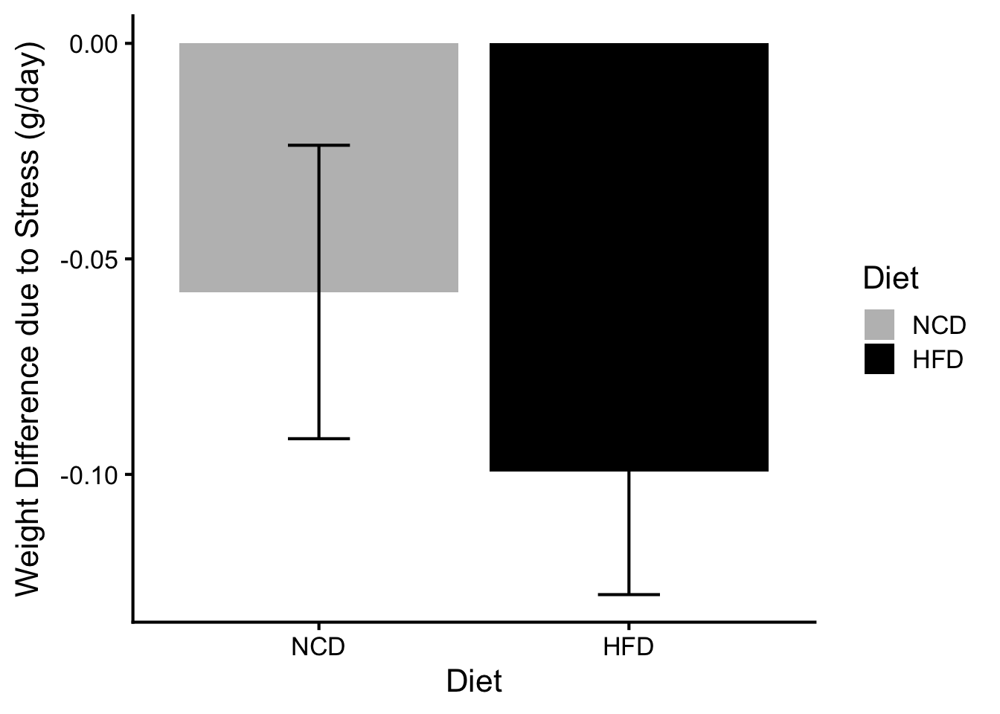
grouped_food <- food |>
filter(!(is.na(Date))) |>
#create a new column called 'Net (g)' by subtracting the previous rows 'Fill (g)' from the current rows 'Left (g)'
group_by(Code) |>
filter(!(Date == '2025-05-02' & Code == '473')) |>
arrange(Code, Date) |>
mutate(`Net (g)` = -(lead(`Left (g)`, default = 0) - `Fill (g)`)) |>
mutate(`Net (g)` = case_when(Date == '2025-05-02' & Code == '473' ~ 0,
Date == '2025-07-22' & Code == '473' ~ NA,
Date == '2025-07-22' & Code == '474' ~ NA,
Date == '2025-07-25' & Code == '474' ~ NA,
Date == '2025-07-01' & Code == '444' ~ NA,
Date == '2025-08-01' & Code == '496' ~ NA, #removed because of suspected ULAM adding food
Date == '2025-09-10' & Code == '792' ~ NA,
Date == '2025-09-10' & Code == '793' ~ NA, #removed because of data correction
Date == '2025-09-10' & Code == '794' ~ NA,
Date == '2025-09-10' & Code == '795' ~ NA, #removed because of suspected crumbs
Date == '2025-10-03' & Code == '792' ~ NA, #removed because of suspected ULAM adding food
Date == '2025-10-03' & Code == '793' ~ NA, #removed because of suspected ULAM adding food
Date == '2025-10-03' & Code == '794' ~ NA, #removed because of suspected ULAM adding food
Date == '2025-10-03' & Code == '795' ~ NA, #removed because of suspected ULAM adding food
Date == '2025-09-12' & Code == '792' ~ 110.4/4 + 6.4, #adjusted because of separation (110.4 grams for 4 mice prior to separation, 6.4 grams afterwards)
Date == '2025-09-12' & Code == '793' ~ 110.4/4 + 11.4,
Date == '2025-09-12' & Code == '794' ~ 110.4/4 + 57,
Date == '2025-09-12' & Code == '795' ~ 110.4/4 + 45.1,
TRUE ~ `Net (g)`)) |>
mutate(`Difference` = lead(Date) - Date) |>
mutate(Day_in_interval = as.integer(time_length(Difference, "days"))) |>
mutate(per_mouse_per_day = `Net (g)` / `Number of Mice` / Day_in_interval) #variable
grouped_food <- grouped_food |>
mutate(`per_mouse_per_day` = case_when(Code == '793' & Date == '2025-10-03' ~ mean(filter(grouped_food, Code == '793' & `Weighted Date` < 73) $per_mouse_per_day, na.rm = TRUE),
Code == '793' & Date == '2025-10-10' ~ mean(filter(grouped_food, Code == '793' & `Weighted Date` < 73) $per_mouse_per_day, na.rm = TRUE),
Code == '794' & Date == '2025-10-03' ~ mean(filter(grouped_food, Code == '794' & `Weighted Date` < 73) $per_mouse_per_day, na.rm = TRUE),
Code == '794' & Date == '2025-10-10' ~ mean(filter(grouped_food, Code == '794' & `Weighted Date` < 73) $per_mouse_per_day, na.rm = TRUE),
Code == '795' & Date == '2025-10-03' ~ mean(filter(grouped_food, Code == '795' & `Weighted Date` < 73) $per_mouse_per_day, na.rm = TRUE),
Code == '795' & Date == '2025-10-10' ~ mean(filter(grouped_food, Code == '795' & `Weighted Date` < 73) $per_mouse_per_day, na.rm = TRUE),
TRUE ~ `per_mouse_per_day`)) |>
mutate(kcal_per_day = case_when(`Diet` == 'HFD' ~ per_mouse_per_day * 5.24,
`Diet` == 'NCD' ~ per_mouse_per_day * 2.91)) |>
filter(!(Date == '2025-07-01' & Code == '444')) |>
mutate(cumulative_kcal = cumsum(kcal_per_day))
#calculate cumulative food intake per cage for each original cage
cumulative.cage.444 <- filter(grouped_food, Code == '444', `Weighted Date` == 80) |>
pull(cumulative_kcal) #pull cumulative_kcal for 444 on day 87
cumulative.cage.405 <- filter(grouped_food, Code == '405', `Weighted Date` == 80) |>
pull(cumulative_kcal)
cumulative.cage.473 <- filter(grouped_food, Code == '473', `Weighted Date` == 45) |>
pull(cumulative_kcal)
cumulative.cage.475 <- filter(grouped_food, Code == '475', `Weighted Date` == 52) |>
pull(cumulative_kcal)
cumulative.cage.473.2 <- filter(grouped_food, Code == '473', `Weighted Date` == 80) |>
pull(cumulative_kcal)
cumulative.cage.448 <- filter(grouped_food, Code == '448', `Weighted Date` == 80) |>
pull(cumulative_kcal)
cumulative.cage.497 <- filter(grouped_food, Code == '497', `Weighted Date` == 59) |>
pull(cumulative_kcal)
cumulative.cage.581 <- filter(grouped_food, Code == '581', `Weighted Date` == 80) |>
pull(cumulative_kcal)
cumulative.cage.792 <- filter(grouped_food, Code == '792', `Weighted Date` == 45) |>
pull(cumulative_kcal)
#add the prior cage's cumulative_kcal (e.g. cumulative.cage.444) to the new cage's cumulative_kcal for every date after separation
grouped_food_cage <-
grouped_food |>
mutate(cumulative_kcal_cage =
case_when(
#repeat for every separation using prior cage's cumulative value, and the date of separation
Code == '446' & `Weighted Date` >= 80 ~ cumulative_kcal + cumulative.cage.444,
Code == '445' & `Weighted Date` >= 80 ~ cumulative_kcal + cumulative.cage.444,
Code == '406' & `Weighted Date` >= 80 ~ cumulative_kcal + cumulative.cage.405,
Code == '407' & `Weighted Date` >= 80 ~ cumulative_kcal + cumulative.cage.405,
Code == '408' & `Weighted Date` >= 80 ~ cumulative_kcal + cumulative.cage.405,
Code == '475' & `Weighted Date` >= 45 ~ cumulative_kcal + cumulative.cage.473,
Code == '496' & `Weighted Date` >= 52 ~ cumulative_kcal + cumulative.cage.475,
Code == '474' & `Weighted Date` >= 80 ~ cumulative_kcal + cumulative.cage.473.2,
Code == '449' & `Weighted Date` >= 80 ~ cumulative_kcal + cumulative.cage.448,
Code == '451' & `Weighted Date` >= 80 ~ cumulative_kcal + cumulative.cage.448,
Code == '452' & `Weighted Date` >= 80 ~ cumulative_kcal + cumulative.cage.448,
Code == '499' & `Weighted Date` >= 59 ~ cumulative_kcal + cumulative.cage.497,
Code == '582' & `Weighted Date` >= 80 ~ cumulative_kcal + cumulative.cage.581,
Code == '583' & `Weighted Date` >= 80 ~ cumulative_kcal + cumulative.cage.581,
Code == '584' & `Weighted Date` >= 80 ~ cumulative_kcal + cumulative.cage.581,
Code == '793' & `Weighted Date` >= 45 ~ cumulative_kcal + cumulative.cage.792,
Code == '794' & `Weighted Date` >= 45 ~ cumulative_kcal + cumulative.cage.792,
Code == '795' & `Weighted Date` >= 45 ~ cumulative_kcal + cumulative.cage.792,
TRUE ~ cumulative_kcal)) #if no separations then keep the same value
grouped_food |>
#filter(Diet == 'HFD', Stress == 'CUS', `Weighted Date` == 24) |>
group_by(Stress, Diet, `Weighted Date`) |>
summarize(Average = mean(kcal_per_day, na.rm = TRUE),
n = length(kcal_per_day),
SE = se(kcal_per_day)) |>
filter(!is.na(Average)) |>
ggplot(
aes(x = `Weighted Date`,
y = `Average`,
ymin = Average - SE,
ymax = Average + SE,
lty = Stress,
color = Diet)) +
geom_line() +
geom_errorbar(width = 2.5) +
labs(y = "Daily Calorie Intake (kcal)",
x = "Time (day)") +
scale_color_manual(values = c("grey", "black")) +
theme_classic(base_size = 16)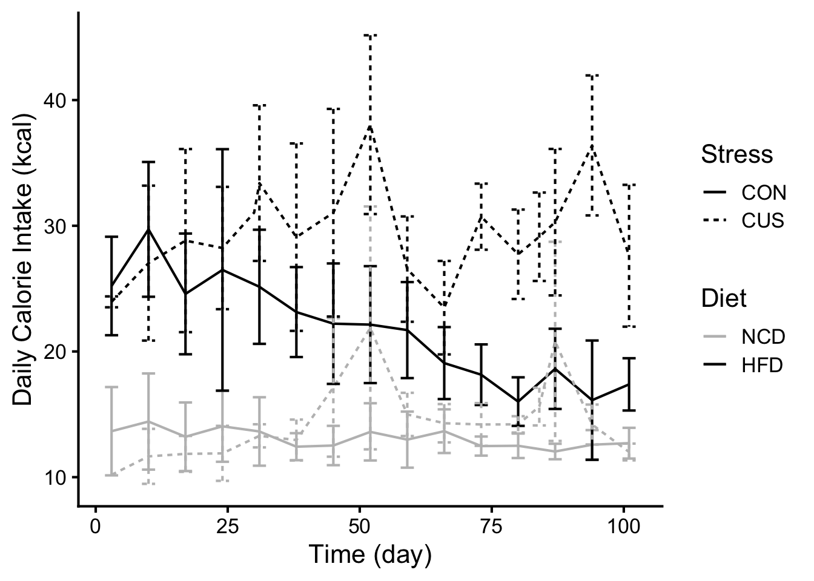
stress.start <- 12*7
food.stress <- filter(grouped_food, `Weighted Date` >= stress.start) |> #filter for only data after start
arrange(Date) |> #sort by date
group_by(Code) |> #group by the code
mutate(Date.Stress = as.numeric(ymd(Date)-first(ymd(Date)))) |> #set date to be after stress start
mutate(Food.Stress = `kcal_per_day`-first(`kcal_per_day`))
grouped_food |>
group_by(Stress, Diet, `Weighted Date`) |>
summarize(Average = mean(kcal_per_day, na.rm = TRUE),
SE = se(kcal_per_day)) |>
filter(!is.na(Average)) |>
mutate(kcal.stress = case_when(`Weighted Date` >= 80 ~ Average - first(Average[`Weighted Date` == 80]),
TRUE ~ Average)) |>
filter(`Weighted Date` >= 80) |>
ggplot(
aes(x = `Weighted Date` - 80,
y = kcal.stress,
ymin = kcal.stress - SE,
ymax = kcal.stress + SE,
lty = Stress,
color = Diet)) +
geom_line() +
geom_errorbar(width = 0.5) +
labs(y = "Change in Daily Calorie Intake (kcal)",
x = "Time (day)") +
scale_color_manual(values = c("grey", "black")) +
theme_classic(base_size = 16)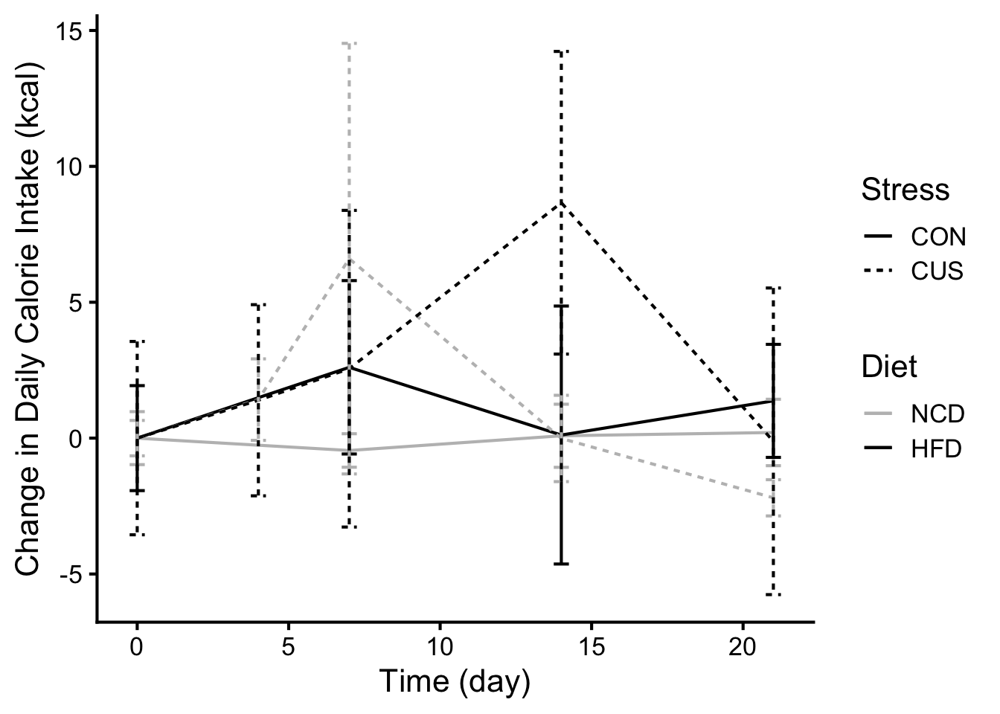
food.stress |>
group_by(Stress, Diet) |>
summarize(Average = mean(kcal_per_day, na.rm = TRUE),
SE = se(kcal_per_day)) |>
ggplot(
aes(x = Diet,
y = `Average`,
ymin = Average - SE,
ymax = Average + SE,
fill = Diet,
alpha = Stress)) +
geom_col(position = position_dodge(width = 0.9)) +
geom_errorbar(width = 0.2,
position = position_dodge(width = 0.9)) +
labs(y = "Average Daily Calorie Intake (kcal/day)",
x = "") +
scale_fill_manual(values = c("grey", "black")) +
scale_alpha_manual(values = c("CON" = 1, "CUS" = 0.85)) +
theme_classic(base_size = 16)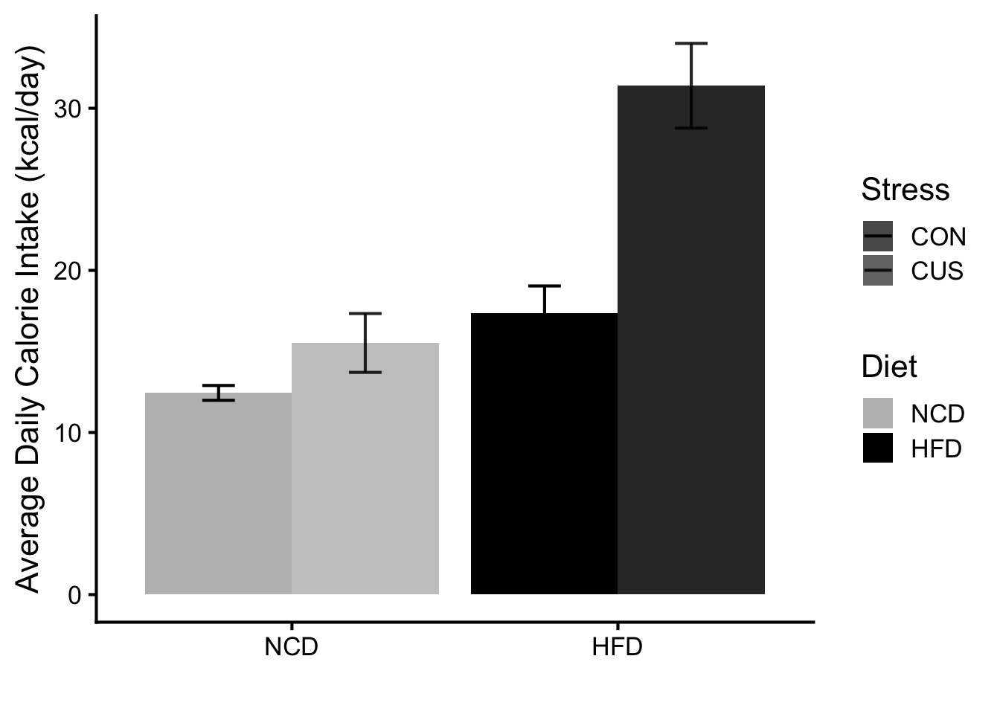
food.stress <- food.stress |>
mutate(Diet = factor(Diet, levels = c("NCD", "HFD"))) #relevel diet so NCD is the reference
food.post.stress.mlm <- lmer(kcal_per_day ~ Stress + Date.Stress + Diet + (1 + Date.Stress||Code), data = filter(food.stress))
food.post.stress.mlm |>
tidy(effects = 'fixed') |>
kable(caption = 'FINAL MODEL: Effect of Stress, Time, and Diet on Food Intake after Stress')| effect | term | estimate | std.error | statistic | df | p.value |
|---|---|---|---|---|---|---|
| fixed | (Intercept) | 9.2578062 | 4.7496385 | 1.949160 | 29.16472 | 0.0609521 |
| fixed | StressCUS | 10.2605900 | 4.3219335 | 2.374074 | 22.61758 | 0.0264786 |
| fixed | Date.Stress | -0.2257518 | 0.2089037 | -1.080650 | 53.69596 | 0.2846826 |
| fixed | DietHFD | 11.9269178 | 4.1044196 | 2.905872 | 21.57604 | 0.0082999 |
food.post.stress.mlm.hfd <- lmer(kcal_per_day ~ Stress * Date.Stress + (1 + Date.Stress||Code), data = filter(food.stress, Diet == 'HFD'))
food.post.stress.mlm.hfd |>
tidy(effects = 'fixed') |>
kable(caption = "Effect of Stress, Time on Food Intake in HFD mice after Stress")| effect | term | estimate | std.error | statistic | df | p.value |
|---|---|---|---|---|---|---|
| fixed | (Intercept) | 17.9927460 | 6.0836720 | 2.9575470 | 26.98735 | 0.0063760 |
| fixed | StressCUS | 14.3442282 | 7.3833339 | 1.9427847 | 26.12604 | 0.0628923 |
| fixed | Date.Stress | -0.0882245 | 0.5671267 | -0.1555640 | 30.72519 | 0.8773943 |
| fixed | StressCUS:Date.Stress | -0.1098622 | 0.6923551 | -0.1586789 | 29.96040 | 0.8749866 |
food.post.stress.mlm.ncd <- lmer(kcal_per_day ~ Stress * Date.Stress + (1 + Date.Stress||Code), data = filter(food.stress, Diet == 'NCD'))
food.post.stress.mlm.ncd |>
tidy(effects = 'fixed') |>
kable(caption = "Effect of Stress, Time on Food Intake in NCD mice after Stress")| effect | term | estimate | std.error | statistic | df | p.value |
|---|---|---|---|---|---|---|
| fixed | (Intercept) | 12.1119127 | 5.3993975 | 2.2431971 | 29.65509 | 0.0325133 |
| fixed | StressCUS | 6.6742558 | 6.2234124 | 1.0724431 | 28.15166 | 0.2926288 |
| fixed | Date.Stress | 0.0473452 | 0.5761733 | 0.0821719 | 22.29706 | 0.9352432 |
| fixed | StressCUS:Date.Stress | -0.4406958 | 0.6416514 | -0.6868150 | 22.74927 | 0.4991412 |
food.post.stress.mlm.int <- lmer(kcal_per_day ~ Stress * Date.Stress * Diet + (1 + Date.Stress||Code), data = filter(food.stress))
food.post.stress.mlm.int |>
tidy(effects = 'fixed') |>
kable(caption = 'Effect of Stress, Time, Diet, and all the interactions on Food Intake after Stress')| effect | term | estimate | std.error | statistic | df | p.value |
|---|---|---|---|---|---|---|
| fixed | (Intercept) | 12.1119127 | 7.7215301 | 1.5685897 | 52.39016 | 0.1227643 |
| fixed | StressCUS | 7.3502737 | 8.9843908 | 0.8181160 | 50.69794 | 0.4171197 |
| fixed | Date.Stress | 0.0473452 | 0.7061950 | 0.0670427 | 56.88180 | 0.9467828 |
| fixed | DietHFD | 5.8808333 | 9.4569044 | 0.6218561 | 52.39016 | 0.5367334 |
| fixed | StressCUS:Date.Stress | -0.4973165 | 0.7913879 | -0.6284106 | 54.82675 | 0.5323443 |
| fixed | StressCUS:DietHFD | 6.6003418 | 11.1543431 | 0.5917284 | 50.78999 | 0.5566573 |
| fixed | Date.Stress:DietHFD | -0.1355697 | 0.8649087 | -0.1567446 | 56.88180 | 0.8760012 |
| fixed | StressCUS:Date.Stress:DietHFD | 0.4655985 | 0.9972048 | 0.4669036 | 55.19351 | 0.6424068 |
check_model(food.post.stress.mlm.int, base_size = 6)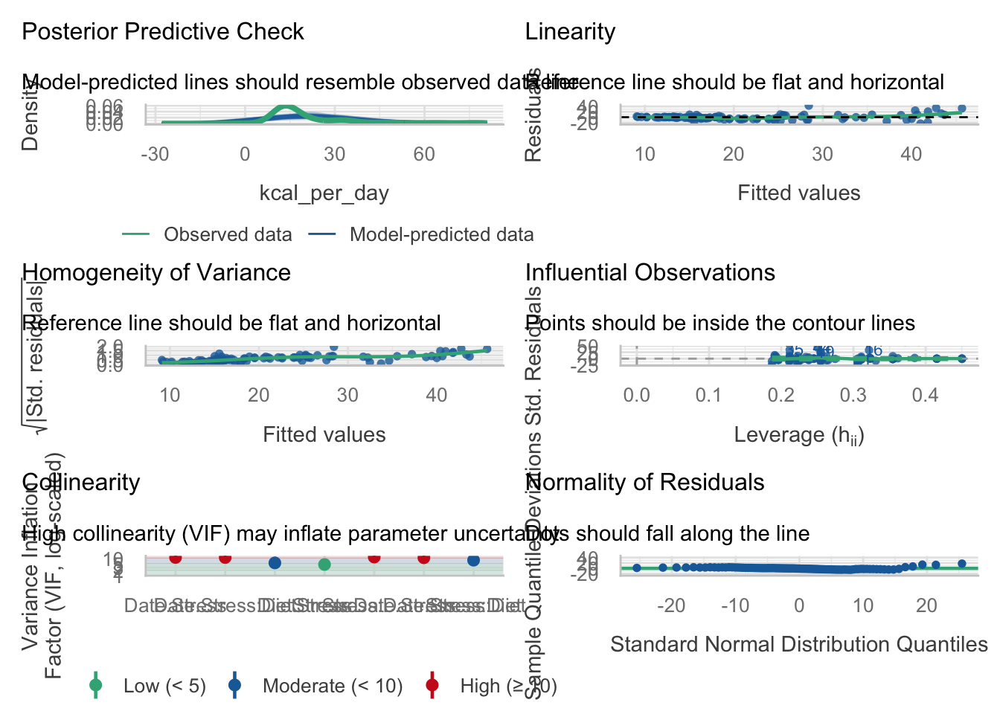
emmeans(food.post.stress.mlm.int, pairwise ~ Diet * Stress) #comparing at endpoint of the data$emmeans
Diet Stress emmean SE df lower.CL upper.CL
NCD CON 12.5 6.21 26.2 -0.301 25.2
HFD CON 17.4 4.39 26.2 8.339 26.4
NCD CUS 16.2 3.74 23.6 8.491 23.9
HFD CUS 31.1 3.09 25.3 24.729 37.4
Degrees-of-freedom method: kenward-roger
Confidence level used: 0.95
$contrasts
contrast estimate SE df t.ratio p.value
NCD CON - HFD CON -4.90 7.60 26.2 -0.645 0.9163
NCD CON - NCD CUS -3.77 7.25 25.5 -0.520 0.9535
NCD CON - HFD CUS -18.63 6.93 26.0 -2.687 0.0564
HFD CON - NCD CUS 1.14 5.77 25.1 0.197 0.9972
HFD CON - HFD CUS -13.72 5.36 25.9 -2.558 0.0742
NCD CUS - HFD CUS -14.86 4.85 24.3 -3.064 0.0254
Degrees-of-freedom method: kenward-roger
P value adjustment: tukey method for comparing a family of 4 estimates #Create a new column called Updated Date to correct the dates
NMR <- NMR |>
mutate(`Updated Date` = case_when(`Weighted Date` == 1 ~ 0,
`Weighted Date` == 79 ~ 80,
TRUE ~ `Weighted Date`)) |>
mutate(`Fat (%)` = `Fat (g)`/`BW (g)` * 100) |>
mutate(`Lean (%)` = `Lean (g)`/`BW (g)` * 100)
NMR |>
group_by(Stress, Diet, `Updated Date`) |>
summarize(Average = mean(`Fat (%)`),
SE = se(`Fat (%)`)) |>
ggplot(
aes(x = `Updated Date`,
y = `Average`,
ymin = Average - SE,
ymax = Average + SE,
lty = Stress,
color = Diet)) +
geom_line() +
geom_errorbar(width = 0.5) +
labs(y = "Fat Mass (%)",
x = "Time (day)") +
scale_color_manual(values = c("grey", "black")) +
theme_classic(base_size = 16)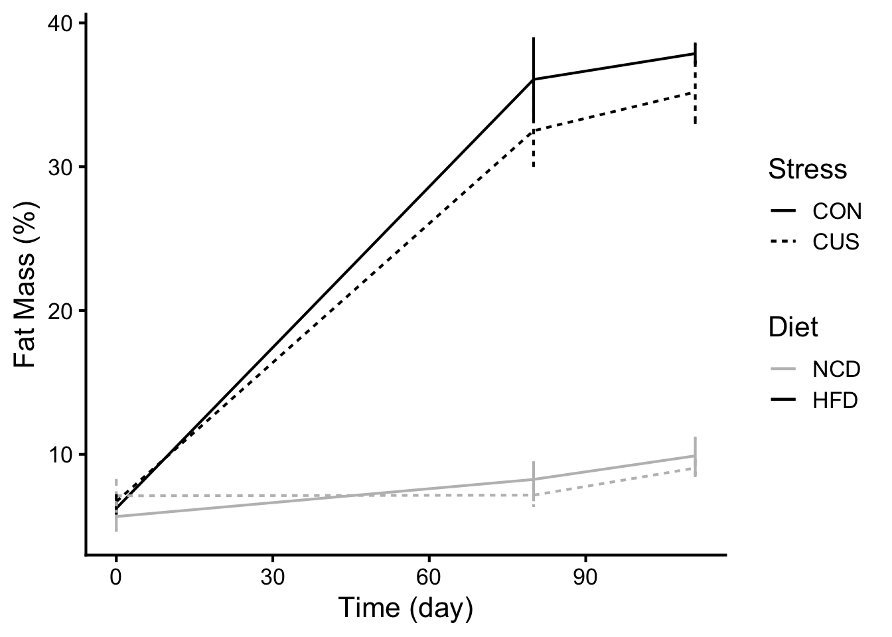
NMR |>
group_by(Stress, Diet, `Updated Date`) |>
summarize(Average = mean(`Lean (%)`),
SE = se(`Lean (%)`)) |>
ggplot(
aes(x = `Updated Date`,
y = `Average`,
ymin = Average - SE,
ymax = Average + SE,
lty = Stress,
color = Diet)) +
geom_line() +
geom_errorbar(width = 0.5) +
labs(y = "Lean Mass (%)",
x = "Time (day)") +
scale_color_manual(values = c("grey", "black")) +
theme_classic(base_size = 16)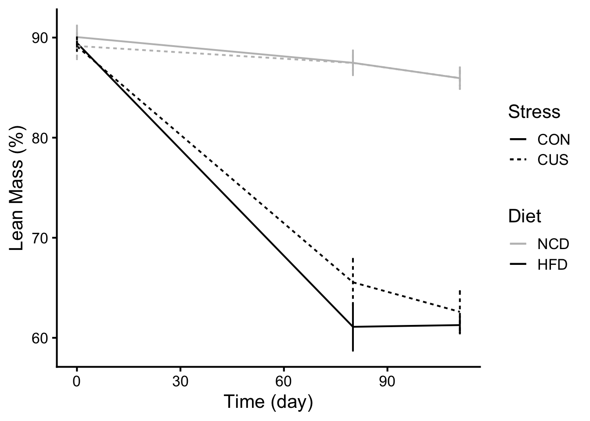
NMR |>
group_by(Stress, Diet, `Updated Date`) |>
summarize(Average = mean(`Fat (g)`),
SE = se(`Fat (g)`)) |>
ggplot(
aes(x = `Updated Date`,
y = `Average`,
ymin = Average - SE,
ymax = Average + SE,
lty = Stress,
color = Diet)) +
geom_line() +
geom_errorbar(width = 2.5) +
labs(y = "Fat Mass (g)",
x = "Time (day)") +
scale_color_manual(values = c("grey", "black")) +
theme_classic(base_size = 16)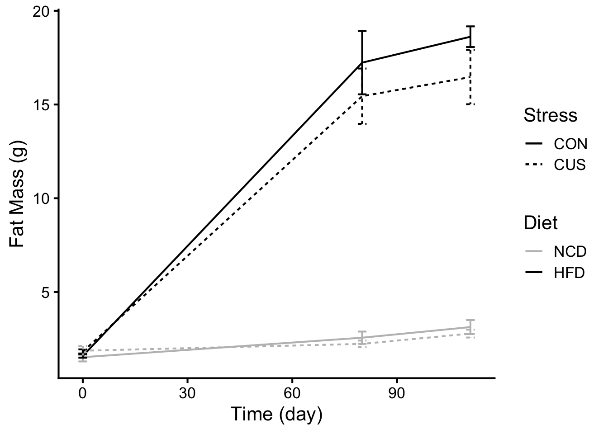
NMR |>
group_by(Stress, Diet, `Updated Date`) |>
summarize(Average = mean(`Lean (g)`),
SE = se(`Lean (g)`)) |>
ggplot(
aes(x = `Updated Date`,
y = `Average`,
ymin = Average - SE,
ymax = Average + SE,
lty = Stress,
color = Diet)) +
geom_line() +
geom_errorbar(width = 2.5) +
labs(y = "Lean Mass (g)",
x = "Time (day)") +
scale_color_manual(values = c("grey", "black")) +
theme_classic(base_size = 16)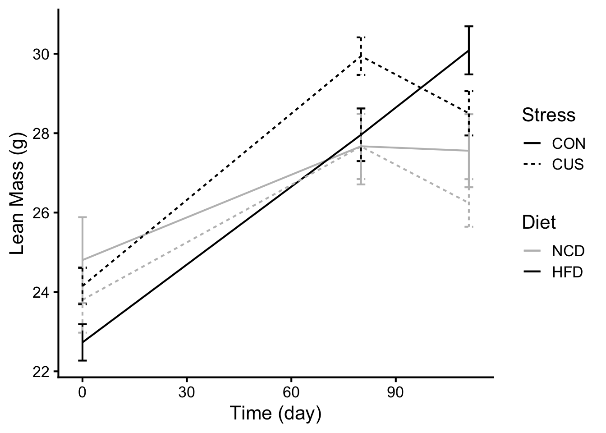
NMR.stress <- NMR |>
filter(`Updated Date` >= 12*7-4) |> #filter for only data after start (NMR is 4 days before wk 12)
arrange(Date) |> #sort by date
group_by(Code) |> #group by the code
mutate(Fat.Change = `Fat (g)`-first(`Fat (g)`)) |>
mutate(Lean.Change = `Lean (g)`-first(`Lean (g)`)) |>
mutate(Fat.Change.Percent = `Fat (%)`-first(`Fat (%)`)) |>
mutate(Lean.Change.Percent = `Lean (%)`-first(`Lean (%)`))
NMR.stress |>
group_by(Stress, Diet, `Updated Date`) |>
summarize(Average = mean(`Fat.Change`),
SE = se(`Fat.Change`)) |>
ggplot(
aes(x = `Updated Date`,
y = `Average`,
ymin = Average - SE,
ymax = Average + SE,
lty = Stress,
color = Diet)) +
geom_line() +
geom_errorbar(width = 0.8) +
labs(y = "Change in Fat Mass (g)",
x = "Time (day)") +
scale_color_manual(values = c("grey", "black")) +
theme_classic(base_size = 16)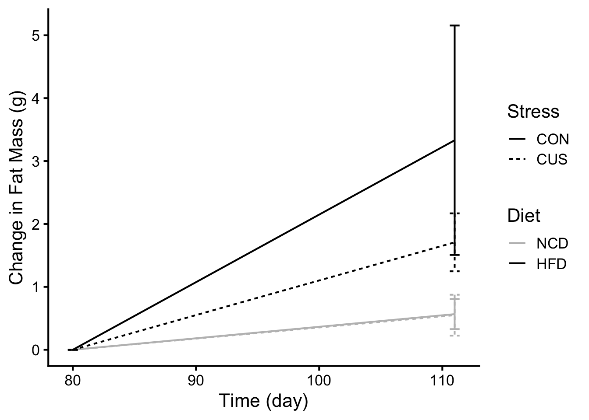
NMR.stress |>
group_by(Stress, Diet, `Updated Date`) |>
summarize(Average = mean(`Lean.Change`),
SE = se(`Lean.Change`)) |>
ggplot(
aes(x = `Updated Date`,
y = `Average`,
ymin = Average - SE,
ymax = Average + SE,
lty = Stress,
color = Diet)) +
geom_line() +
geom_errorbar(width = 0.8) +
labs(y = "Change in Lean Mass (g)",
x = "Time (day)") +
scale_color_manual(values = c("grey", "black")) +
theme_classic(base_size = 16)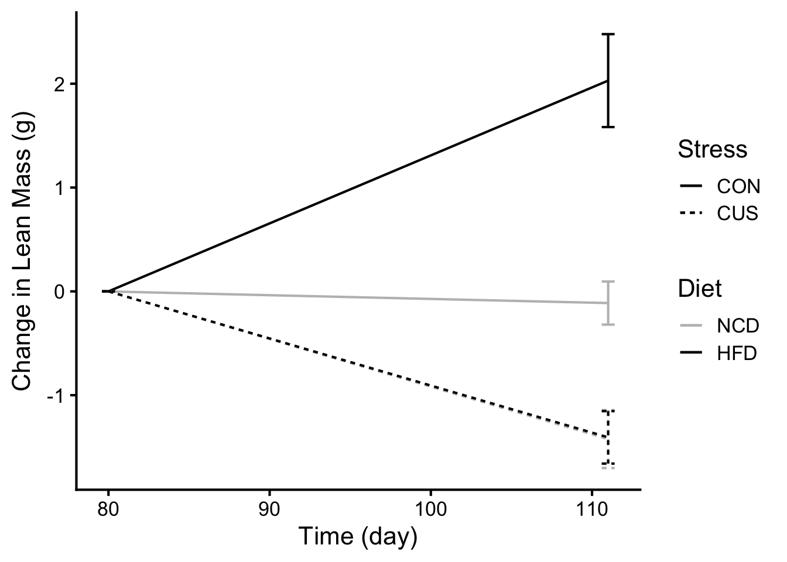
NMR.stress |>
group_by(Stress, Diet, `Updated Date`) |>
summarize(Average = mean(`Fat.Change.Percent`),
SE = se(`Fat.Change.Percent`)) |>
ggplot(
aes(x = `Updated Date`,
y = `Average`,
ymin = Average - SE,
ymax = Average + SE,
lty = Stress,
color = Diet)) +
geom_line() +
geom_errorbar(width = 0.8) +
labs(y = "Change in Fat Mass (%)",
x = "Time (day)") +
scale_color_manual(values = c("grey", "black")) +
theme_classic(base_size = 16)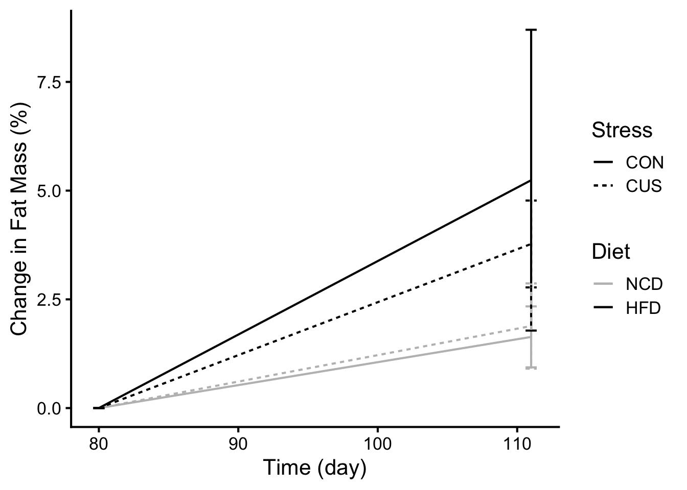
NMR.stress |>
group_by(Stress, Diet, `Updated Date`) |>
summarize(Average = mean(`Lean.Change.Percent`),
SE = se(`Lean.Change.Percent`)) |>
ggplot(
aes(x = `Updated Date`,
y = `Average`,
ymin = Average - SE,
ymax = Average + SE,
lty = Stress,
color = Diet)) +
geom_line() +
geom_errorbar(width = 0.8) +
labs(y = "Change in Lean Mass (%)",
x = "Time (day)") +
scale_color_manual(values = c("grey", "black")) +
theme_classic(base_size = 16)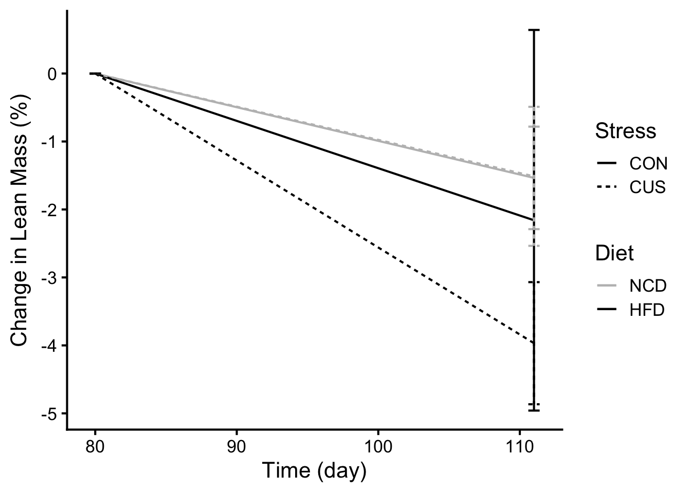
#fat mass change
fat.post.stress <- filter(NMR, `Updated Date` >= 80) |>
mutate(Diet = relevel(as.factor(Diet), ref = "NCD"))
fat.post.stress.mlm <- lmer(`Fat (g)` ~ `Updated Date` + Diet + Stress + (1 + `Updated Date`||Code), data = fat.post.stress)
fat.post.stress.mlm |>
tidy(effects = 'fixed') |>
kable(caption = 'Effect of Diet, Stress, Time on Fat Mass after Stress')| effect | term | estimate | std.error | statistic | df | p.value |
|---|---|---|---|---|---|---|
| fixed | (Intercept) | -0.8088137 | 1.7606599 | -0.459381 | 61.05632 | 0.6475920 |
| fixed | Updated Date |
0.0440766 | 0.0152912 | 2.882484 | 33.95094 | 0.0067973 |
| fixed | DietHFD | 14.6151033 | 1.0963822 | 13.330300 | 36.18529 | 0.0000000 |
| fixed | StressCUS | -1.4497496 | 1.0770694 | -1.346013 | 36.52982 | 0.1865926 |
fat.post.stress.mlm.int.hfd <- lmer(`Fat (g)` ~ `Updated Date` + Stress + Stress:`Updated Date` + (1 + `Updated Date`||Code), data = fat.post.stress |>
filter(Diet == 'HFD'))
fat.post.stress.mlm.int.hfd |>
tidy(effects = 'fixed') |>
kable(caption = 'Effect of Diet, Stress, Time, Stress:Time on HFD mice Fat Mass after Stress')| effect | term | estimate | std.error | statistic | df | p.value |
|---|---|---|---|---|---|---|
| fixed | (Intercept) | 10.0482540 | 3.8425919 | 2.6149678 | 21.67692 | 0.0159257 |
| fixed | Updated Date |
0.0898135 | 0.0397787 | 2.2578300 | 17.72795 | 0.0368184 |
| fixed | StressCUS | 1.4860799 | 5.2635053 | 0.2823365 | 21.67345 | 0.7803641 |
| fixed | Updated Date:StressCUS |
-0.0409510 | 0.0536590 | -0.7631709 | 17.37404 | 0.4556000 |
fat.post.stress.mlm.int.ncd <- lmer(`Fat (g)` ~ `Updated Date` + Stress + Stress:`Updated Date` + (1 + `Updated Date`||Code), data = fat.post.stress |>
filter(Diet == 'NCD'))
fat.post.stress.mlm.int.ncd |>
tidy(effects = 'fixed') |>
kable(caption = 'Effect of Diet, Stress, Time, Stress:Time on NCD mice Fat Mass after Stress')| effect | term | estimate | std.error | statistic | df | p.value |
|---|---|---|---|---|---|---|
| fixed | (Intercept) | 1.0967339 | 0.8746083 | 1.2539715 | 14.12832 | 0.2302043 |
| fixed | Updated Date |
0.0183065 | 0.0088814 | 2.0612176 | 14.68778 | 0.0574469 |
| fixed | StressCUS | -0.2848387 | 1.2368829 | -0.2302875 | 14.12832 | 0.8211694 |
| fixed | Updated Date:StressCUS |
-0.0005645 | 0.0125602 | -0.0449450 | 14.68778 | 0.9647565 |
#slope differences
fat.post.stress <- fat.post.stress |>
mutate(time_fat = as.numeric(`Updated Date`)) #convert to numeric for 3-way interaction
fat.post.stress.mlm.int <- lmer(`Fat (g)` ~ time_fat * Diet * Stress + (1 + time_fat||Code), data = fat.post.stress)
fat.post.stress.mlm.int |>
tidy(effects = 'fixed') |>
kable(caption = 'FINAL MODEL: Diet, Stress, Time, and all interaction effects on Fat Mass after stress')| effect | term | estimate | std.error | statistic | df | p.value |
|---|---|---|---|---|---|---|
| fixed | (Intercept) | 1.0967339 | 3.1756406 | 0.3453583 | 40.03697 | 0.7316330 |
| fixed | time_fat | 0.0183065 | 0.0306837 | 0.5966185 | 29.39201 | 0.5553301 |
| fixed | DietHFD | 8.8589712 | 4.3073022 | 2.0567331 | 39.90345 | 0.0462908 |
| fixed | StressCUS | -0.2848387 | 4.4910341 | -0.0634239 | 40.03697 | 0.9497446 |
| fixed | time_fat:DietHFD | 0.0726639 | 0.0429163 | 1.6931542 | 30.60536 | 0.1005827 |
| fixed | time_fat:StressCUS | -0.0005645 | 0.0433933 | -0.0130093 | 29.39201 | 0.9897083 |
| fixed | DietHFD:StressCUS | 1.8307706 | 6.0048886 | 0.3048800 | 39.94076 | 0.7620406 |
| fixed | time_fat:DietHFD:StressCUS | -0.0411346 | 0.0593298 | -0.6933221 | 30.27562 | 0.4933925 |
emtrends(fat.post.stress.mlm.int, ~ Diet * Stress, var = "time_fat") -> slopes_fat
pairs(slopes_fat, by = 'Diet') |>
summary() |>
as.data.frame() |>
ggplot(aes(x = Diet,
y = -estimate,
ymin = -estimate - SE,
ymax = -estimate + SE,
fill = Diet)) +
geom_bar(stat = "identity",
position = "dodge") +
geom_errorbar(position = position_dodge(width = 0.9),
width = 0.1) +
labs(y = "Fat Mass Difference due to Stress (g/day)",
x = "Diet") +
theme_classic(base_size = 15) +
scale_fill_manual(values = c("HFD" = "black", "NCD" = "grey"))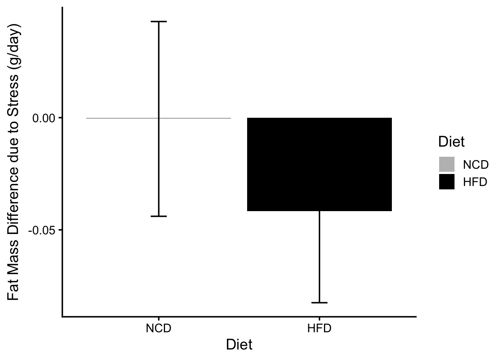
#lean mass change
lean.post.stress <- filter(NMR, `Updated Date` >= 80) |>
mutate(Diet = relevel(as.factor(Diet), ref = "NCD"))
lean.post.stress.mlm <- lmer(`Lean (g)` ~ `Updated Date` + Diet + Stress + (1 + `Updated Date`||Code), data = lean.post.stress)
lean.post.stress.mlm |>
tidy(effects = 'fixed') |>
kable(caption = 'Effect of Diet, Stress, Time on Lean Mass after Stress')| effect | term | estimate | std.error | statistic | df | p.value |
|---|---|---|---|---|---|---|
| fixed | (Intercept) | 28.0508326 | 1.0452123 | 26.8374485 | 62.50491 | 0.0000000 |
| fixed | Updated Date |
-0.0087189 | 0.0089853 | -0.9703506 | 34.92414 | 0.3385445 |
| fixed | DietHFD | 1.6974703 | 0.6644335 | 2.5547632 | 37.25524 | 0.0148424 |
| fixed | StressCUS | 0.1323930 | 0.6526362 | 0.2028587 | 37.58255 | 0.8403397 |
lean.post.stress.mlm.int.hfd <- lmer(`Lean (g)` ~ `Updated Date` + Stress + Stress:`Updated Date` + (1 + `Updated Date`||Code), data = lean.post.stress |>
filter(Diet == 'HFD'))
lean.post.stress.mlm.int.hfd |>
tidy(effects = 'fixed') |>
kable(caption = 'Effect of Diet, Stress, Time, Stress:Time on HFD mice Lean Mass after Stress')| effect | term | estimate | std.error | statistic | df | p.value |
|---|---|---|---|---|---|---|
| fixed | (Intercept) | 22.6818536 | 1.1578134 | 19.590249 | 24.98619 | 0.00e+00 |
| fixed | Updated Date |
0.0659768 | 0.0114662 | 5.754052 | 17.50311 | 2.09e-05 |
| fixed | StressCUS | 10.9029880 | 1.5880198 | 6.865776 | 25.36706 | 3.00e-07 |
| fixed | Updated Date:StressCUS |
-0.1115061 | 0.0154292 | -7.226936 | 17.30887 | 1.30e-06 |
lean.post.stress.mlm.int.ncd <- lmer(`Lean (g)` ~ `Updated Date` + Stress + Stress:`Updated Date` + (1 + `Updated Date`||Code), data = lean.post.stress |>
filter(Diet == 'NCD'))
lean.post.stress.mlm.int.ncd |>
tidy(effects = 'fixed') |>
kable(caption = 'Effect of Diet, Stress, Time, Stress:Time on NCD mice Lean Mass after Stress')| effect | term | estimate | std.error | statistic | df | p.value |
|---|---|---|---|---|---|---|
| fixed | (Intercept) | 27.9615726 | 1.1226824 | 24.9060393 | 27.77987 | 0.0000000 |
| fixed | Updated Date |
-0.0036290 | 0.0079340 | -0.4574012 | 14.00000 | 0.6544003 |
| fixed | StressCUS | 3.3743952 | 1.5877127 | 2.1253185 | 27.77987 | 0.0425909 |
| fixed | Updated Date:StressCUS |
-0.0422581 | 0.0112204 | -3.7661798 | 14.00000 | 0.0020856 |
#slope differences
lean.post.stress <- lean.post.stress |>
mutate(time_lean = as.numeric(`Updated Date`)) #convert to numeric for 3-way interaction
lean.post.stress.mlm.int <- lmer(`Lean (g)` ~ time_lean * Diet * Stress + (1 + time_lean||Code), data = lean.post.stress)
lean.post.stress.mlm.int |>
tidy(effects = 'fixed') |>
kable(caption = 'FINAL MODEL: Diet, Stress, Time, and all interaction effects on Lean Mass after stress')| effect | term | estimate | std.error | statistic | df | p.value |
|---|---|---|---|---|---|---|
| fixed | (Intercept) | 27.9615726 | 1.1965682 | 23.3681401 | 57.53922 | 0.0000000 |
| fixed | time_lean | -0.0036290 | 0.0101075 | -0.3590423 | 30.43196 | 0.7220427 |
| fixed | DietHFD | -5.2638278 | 1.6106026 | -3.2682349 | 55.62610 | 0.0018582 |
| fixed | StressCUS | 3.3743952 | 1.6922029 | 1.9940842 | 57.53922 | 0.0508893 |
| fixed | time_lean:DietHFD | 0.0694072 | 0.0142384 | 4.8746615 | 30.88965 | 0.0000310 |
| fixed | time_lean:StressCUS | -0.0422581 | 0.0142942 | -2.9563061 | 30.43196 | 0.0059666 |
| fixed | DietHFD:StressCUS | 7.5070787 | 2.2502072 | 3.3361721 | 56.17674 | 0.0015105 |
| fixed | time_lean:DietHFD:StressCUS | -0.0689791 | 0.0196465 | -3.5110087 | 30.76780 | 0.0014010 |
emtrends(lean.post.stress.mlm.int, ~ Diet * Stress, var = "time_lean") -> slopes_lean
pairs(slopes_lean, by = 'Diet') |>
summary() |>
as.data.frame() |>
ggplot(aes(x = Diet,
y = -estimate,
ymin = -estimate - SE,
ymax = -estimate + SE,
fill = Diet)) +
geom_bar(stat = "identity",
position = "dodge") +
geom_errorbar(position = position_dodge(width = 0.9),
width = 0.1) +
labs(y = "Lean Mass Difference due to Stress (g/day)",
x = "Diet") +
theme_classic(base_size = 15) +
scale_fill_manual(values = c("HFD" = "black", "NCD" = "grey"))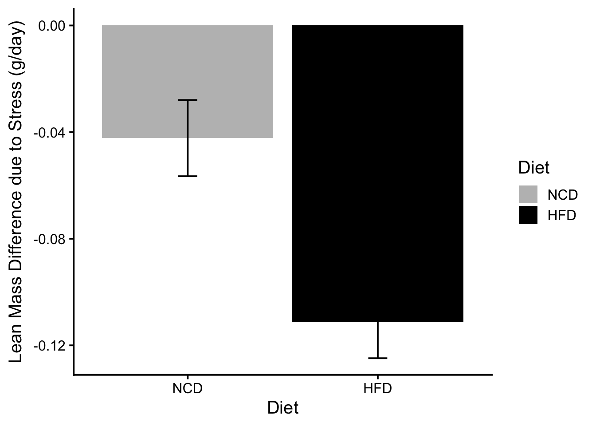
#per mouse change in fat and lean mass
energy.NMR.post.stress <- NMR.stress |>
group_by(Code) |>
summarize(Diet = first(Diet),
Stress = first(Stress),
Fat.Change = last(`Fat (g)`) - first(`Fat (g)`),
Lean.Change = last(`Lean (g)`) - first(`Lean (g)`),
.groups = "drop") |>
mutate(Fat.kcal = Fat.Change * 9.1) |>
mutate(Lean.kcal = Lean.Change * 4.2) |>
mutate(Total.kcal = Fat.kcal + Lean.kcal) |>
mutate(kcal.day = Total.kcal/21) |>
filter(kcal.day != 0)
#per mouse cumulative calorie intake
stress.start <- 12*7
energy.food.post.stress <- grouped_food_cage |>
filter(`Weighted Date` > stress.start) |>
group_by(Code, Diet, Stress) |>
summarize(FI.kcal = mean(kcal_per_day, na.rm = TRUE)) #total kcal prior to stress
energy.expenditure.post.stress <- left_join(energy.NMR.post.stress,
energy.food.post.stress,
by = c("Code", "Diet", "Stress")) |>
fill(FI.kcal, .direction = c("down")) |>
mutate(kcal.balance.day = FI.kcal - kcal.day)
energy.expenditure.post.stress |>
group_by(Diet, Stress) |>
summarize(Average.kcal.balance.day = mean(kcal.balance.day, na.rm = TRUE),
SE.kcal.balance.day = sd(kcal.balance.day, na.rm = TRUE)/sqrt(n()),
.groups = "drop") |>
ggplot(
aes(x = Diet,
y = Average.kcal.balance.day,
ymin = Average.kcal.balance.day - SE.kcal.balance.day,
ymax = Average.kcal.balance.day + SE.kcal.balance.day,
fill = Diet,
alpha = Stress)) +
geom_col(position = position_dodge(width = 0.9)) +
geom_errorbar(width = 0.2,
position = position_dodge(width = 0.9)) +
labs(y = "Estimated Energy Expenditure (kcal/day)",
x = "") +
geom_hline(yintercept = 0,
lty = 2) +
scale_fill_manual(values = c("grey", "black")) +
scale_alpha_manual(values = c("CON" = 1, "CUS" = 0.8)) +
theme_classic(base_size = 15)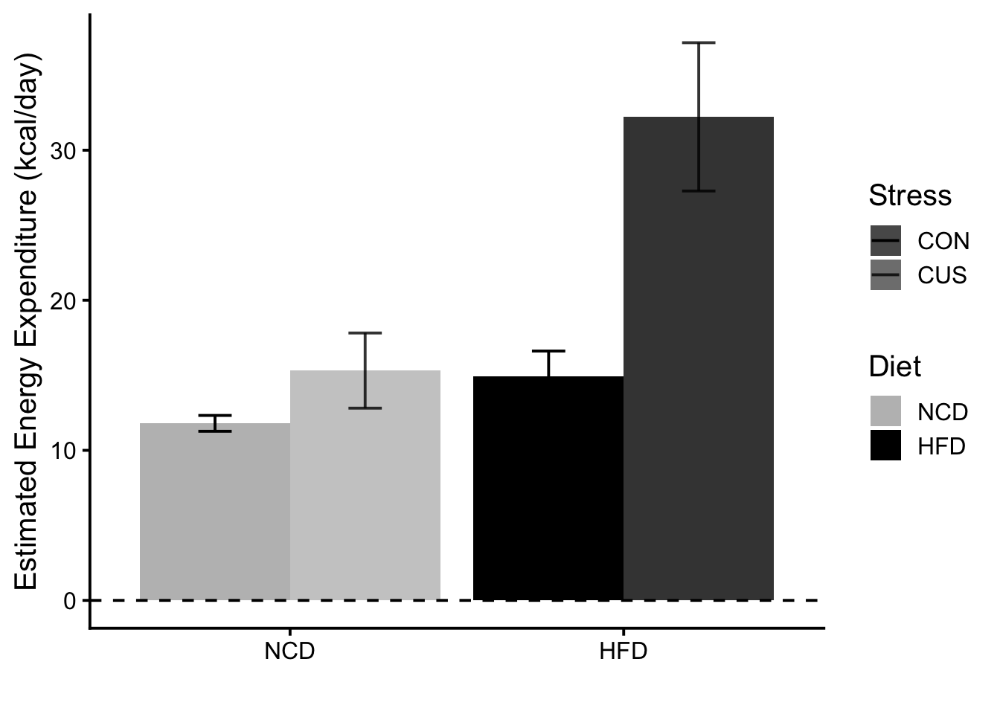
energy.expenditure.post.stress.lm <- lm(kcal.balance.day ~ Diet * Stress, data = energy.expenditure.post.stress)
energy.expenditure.post.stress.lm |>
tidy() |>
kable(caption = 'FINAL MODEL: Effect of Diet, Stress, and interaction effects on Estimated Energy Expenditure after Stress')| term | estimate | std.error | statistic | p.value |
|---|---|---|---|---|
| (Intercept) | 11.798232 | 3.367965 | 3.5030743 | 0.0014648 |
| DietHFD | 3.138940 | 4.763022 | 0.6590229 | 0.5149081 |
| StressCUS | 3.516774 | 4.763022 | 0.7383493 | 0.4660395 |
| DietHFD:StressCUS | 13.769749 | 6.565373 | 2.0973293 | 0.0444953 |
energy.expenditure.post.stress.lm.hfd <- lm(kcal.balance.day ~ Stress, data = energy.expenditure.post.stress |>
filter(Diet == 'HFD'))
energy.expenditure.post.stress.lm.hfd |>
tidy() |>
kable(caption = 'Effect of Diet and Stress on Daily Estimated Energy Expenditure in HFD mice after Stress')| term | estimate | std.error | statistic | p.value |
|---|---|---|---|---|
| (Intercept) | 14.93717 | 4.289779 | 3.482038 | 0.0030781 |
| StressCUS | 17.28652 | 5.755343 | 3.003561 | 0.0084167 |
energy.expenditure.post.stress.lm.ncd <- lm(kcal.balance.day ~ Stress, data = energy.expenditure.post.stress |>
filter(Diet == 'NCD'))
energy.expenditure.post.stress.lm.ncd |>
tidy() |>
kable(caption = 'Effect of Diet and Stress on Daily Estimated Energy Expenditure in NCD mice after Stress')| term | estimate | std.error | statistic | p.value |
|---|---|---|---|---|
| (Intercept) | 11.798232 | 1.809902 | 6.518715 | 0.0000136 |
| StressCUS | 3.516774 | 2.559587 | 1.373961 | 0.1910531 |
sessionInfo()R version 4.6.0 (2026-04-24)
Platform: aarch64-apple-darwin23
Running under: macOS Tahoe 26.5.1
Matrix products: default
BLAS: /Library/Frameworks/R.framework/Versions/4.6/Resources/lib/libRblas.0.dylib
LAPACK: /Library/Frameworks/R.framework/Versions/4.6/Resources/lib/libRlapack.dylib; LAPACK version 3.12.1
locale:
[1] en_US.UTF-8/en_US.UTF-8/en_US.UTF-8/C/en_US.UTF-8/en_US.UTF-8
time zone: America/Detroit
tzcode source: internal
attached base packages:
[1] stats graphics grDevices utils datasets methods base
other attached packages:
[1] AER_1.2-16 lmtest_0.9-40 zoo_1.8-15
[4] car_3.1-5 carData_3.0-6 fitdistrplus_1.2-6
[7] survival_3.8-6 drc_3.0-1 DHARMa_0.5.0
[10] pbkrtest_0.5.5 emmeans_2.0.3 influence.ME_0.9-10
[13] mediation_4.5.1 sandwich_3.1-1 mvtnorm_1.4-1
[16] MASS_7.3-65 ggpattern_1.3.1 see_0.13.0
[19] performance_0.16.0 broom.mixed_0.2.9.7 broom_1.0.13
[22] knitr_1.51 lmerTest_3.2-1 lme4_2.0-1
[25] Matrix_1.7-5 readxl_1.5.0 lubridate_1.9.5
[28] forcats_1.0.1 stringr_1.6.0 dplyr_1.2.1
[31] purrr_1.2.2 readr_2.2.0 tidyr_1.3.2
[34] tibble_3.3.1 ggplot2_4.0.3 tidyverse_2.0.0
loaded via a namespace (and not attached):
[1] Rdpack_2.6.6 gridExtra_2.3 rlang_1.2.0
[4] magrittr_2.0.5 multcomp_1.4-30 furrr_0.4.0
[7] otel_0.2.0 compiler_4.6.0 mgcv_1.9-4
[10] vctrs_0.7.3 pkgconfig_2.0.3 fastmap_1.2.0
[13] backports_1.5.1 labeling_0.4.3 rmarkdown_2.31
[16] tzdb_0.5.0 nloptr_2.2.1 xfun_0.57
[19] jsonlite_2.0.0 parallel_4.6.0 cluster_2.1.8.2
[22] R6_2.6.1 stringi_1.8.7 RColorBrewer_1.1-3
[25] parallelly_1.47.0 boot_1.3-32 rpart_4.1.27
[28] cellranger_1.1.0 numDeriv_2016.8-1.1 estimability_1.5.1
[31] Rcpp_1.1.1-1.1 parameters_0.29.0 base64enc_0.1-6
[34] splines_4.6.0 nnet_7.3-20 timechange_0.4.0
[37] tidyselect_1.2.1 abind_1.4-8 rstudioapi_0.19.0
[40] yaml_2.3.12 codetools_0.2-20 listenv_0.10.1
[43] lattice_0.22-9 bayestestR_0.17.0 withr_3.0.2
[46] S7_0.2.2 coda_0.19-4.1 evaluate_1.0.5
[49] foreign_0.8-91 future_1.70.0 lpSolve_5.6.23
[52] pillar_1.11.1 checkmate_2.3.4 reformulas_0.4.4
[55] insight_1.5.0 generics_0.1.4 hms_1.1.4
[58] scales_1.4.0 minqa_1.2.8 gtools_3.9.5
[61] globals_0.19.1 xtable_1.8-8 glue_1.8.1
[64] Hmisc_5.2-5 tools_4.6.0 data.table_1.18.4
[67] grid_4.6.0 plotrix_3.8-14 rbibutils_2.4.1
[70] datawizard_1.3.1 colorspace_2.1-2 patchwork_1.3.2
[73] nlme_3.1-169 htmlTable_2.5.0 Formula_1.2-5
[76] cli_3.6.6 gtable_0.3.6 digest_0.6.39
[79] TH.data_1.1-5 htmlwidgets_1.6.4 farver_2.1.2
[82] htmltools_0.5.9 lifecycle_1.0.5